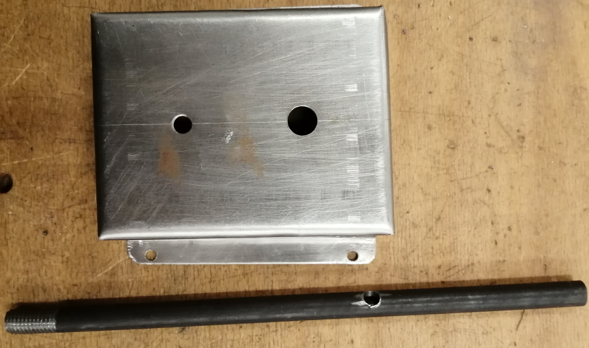
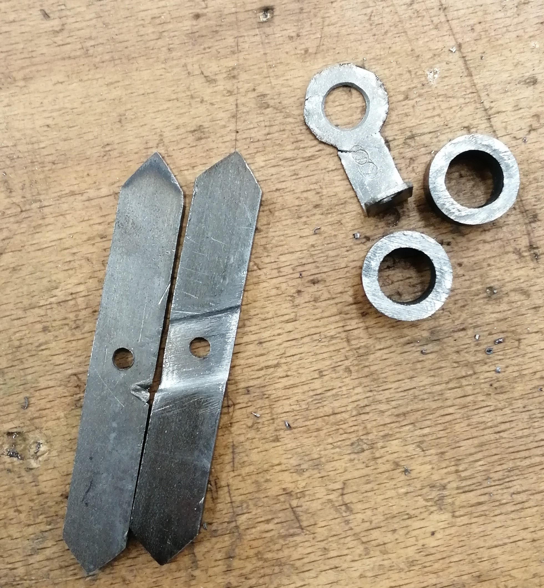
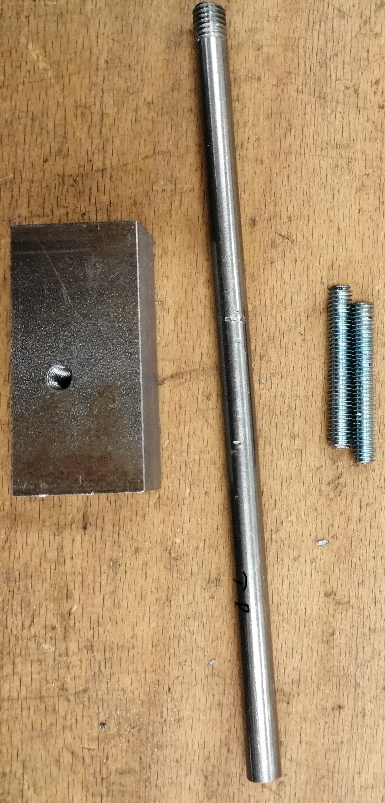
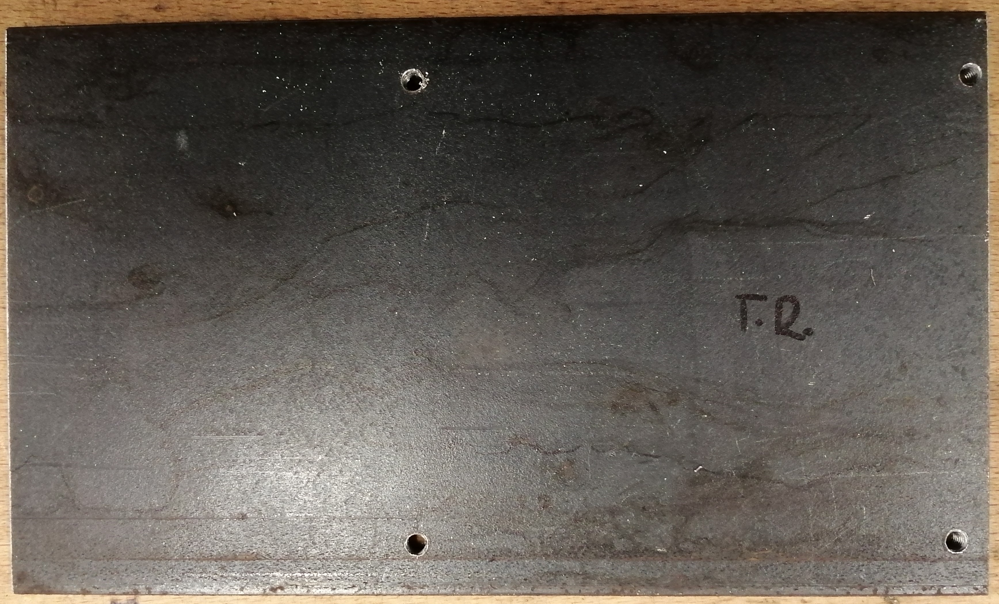
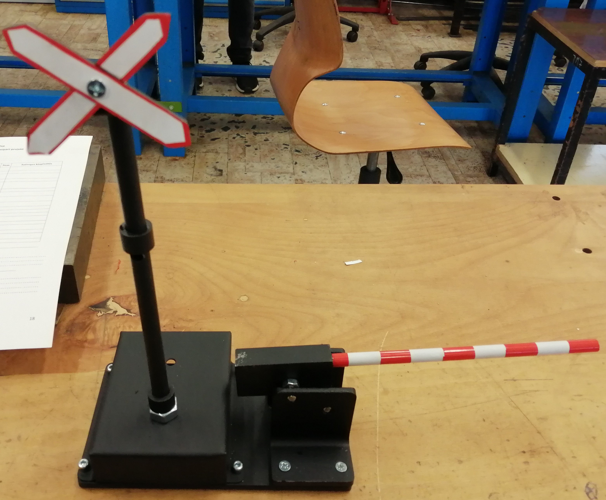

Projekt #1 - Vasúti átjáró
Projektfeladat leírása
A projekt során egy vasúti jelzőlámpával ellátott sorompó fém szerkezetének elkészítése volt a feladat. A munkát fémipari gyakorlat keretében végeztük, ahol a teljes szerkezetet saját kezűleg kellett megtervezni és kivitelezni. A projekt során különböző fémipari technológiákat alkalmaztunk, mint például darabolás, fúrás, menetvágás és szerelés. Kiemelt figyelmet fordítottunk a munkavédelmi szabályok betartására, mivel a megmunkálás során többféle gépet és szerszámot használtunk. A cél egy stabil, működőképes és esztétikus modell elkészítése volt, amely szemlélteti egy vasúti sorompó felépítését
A projektben használt eszközök
● Tolómérő ●
● Karctű ●
● Kalapács ●
● Reszelő ●
● Menetfúró készlet ●
● Satu ●
● Élhajlító ●
● Fúrógép ●
● Vas Vágógép ●
Konklúzió és Önreflexió
A projekt során sikeresen elkészítettük a vasúti sorompó fém szerkezetét, amely megfelel a kitűzött céloknak és megfelelően szemlélteti a működési elvet. A feladatok elvégzése során fejlődtek a fémipari alapkészségeim, különösen a pontos mérés, a megmunkálás és az alkatrészek összeillesztése terén. A munkafolyamatokat logikusan és átláthatóan igyekeztem végrehajtani, törekedve a precíz és esztétikus kivitelezésre. A legtöbb részfeladat nem okozott komoly nehézséget, azonban előfordultak kisebb pontatlanságok, amelyek miatt egyes lépéseket újra kellett végezni. Önreflexióként elmondható, hogy erősségem a precíz munkavégzés és a szerkezet stabil kialakítására való törekvés volt. Fejlesztendő terület számomra a munkafolyamatok előzetes megtervezése és a hatékonyabb időgazdálkodás. A jövőben szeretnék még pontosabban dolgozni, valamint jobban odafigyelni a mérésekre és a tervezésre, hogy elkerüljem a felesleges újramunkálást.
Képek és Videók




